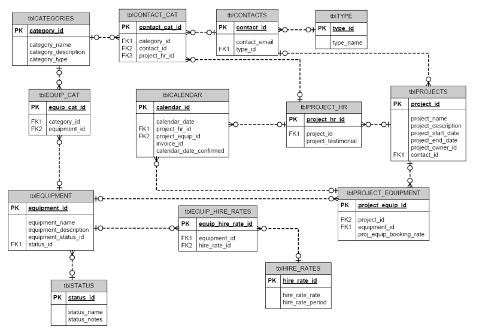

Entity Relationship Diagram ehk ERD on diagrammitüüp, mis kujutab visuaalselt, kuidas objektid, entiteedid või mõisted on omavahel seotud. See leidub andmebaaside kavandamisel, äriinfosüsteemides, hariduses ning teadustöös. ERD-d kasutavad sümbolid nagu ristkülikud, rombid, ellipsid ja jooned, et esitada seosed erinevate entiteetide vahel. 
Peter Chen, tuntud ka kui Peter Pin-Shan Chen, oli Carnegie-Melloni Ülikooli õppejõud Pittsburghis, kes arendas välja ER-mudeli andmebaasi kavandamise jaoks 1970. aastatel. Kuigi andmete omavahelise seotuse kujutamine ulatub tagasi antiik-Kreekasse, kus seda mainiti Aristotelese, Sokratese ja Platoni töödes, ning hiljem nähti seda 19. ja 20. sajandi filosoofia-loogikute nagu Charles Sanders Peirce'i ja Gottlob Frege'i töödes, oli Peter Chen see, kes tõi selle idee praktilisse rakendusse andmebaasi kavandamisel. 1970. aastatel töötasid Charles Bachman ja A.P.G. Brown tihedalt koos Peter Cheni lähenemise eelkäijatega. Bachman arendas välja andmestruktuuri diagrammi tüübi, mida tuntakse Bachman Diagrammina ja mis sai nime tema järgi.
Andmebaasi kavandamisel kasutatakse ER-diagramme seotud andmebaaside kavandamiseks ja nõuete määramiseks. Need aitavad selgitada loogikat ja ärireegleid ning rakendada sobivat tehnoloogiat.
Andmebaasi tõrkeotsingul kasutatakse ER-diagramme olemasolevate andmebaaside analüüsimiseks ja probleemide lahendamiseks.
Äriinfosüsteemides kasutatakse diagramme äriprotsessides kasutatavate andmebaaside kavandamiseks või analüüsimiseks. See võib aidata protsesse optimeerida ja parandada info kättesaadavust.
Äriprotsesside ümberkujundamisel (BPR) aitavad ER-diagrammid analüüsida äriprotsesside ümberkujundamisel kasutatavaid andmebaase ja uue andmebaasi seadistuse modelleerimisel.
Hariduses aitavad ER-diagrammid planeerida andmebaase hariduslikel eesmärkidel, võimaldades struktureeritud teabe salvestamist ja taastamist.
Teadustöös mängivad ER-diagrammid võtmerolli kasulike andmebaaside seadistamisel, mis aitavad analüüsida struktureeritud teadusandmeid.